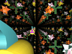
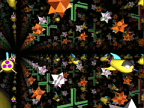
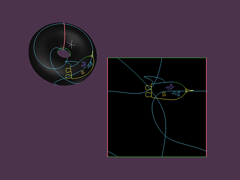
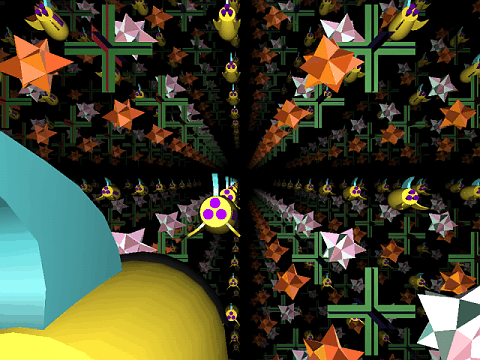
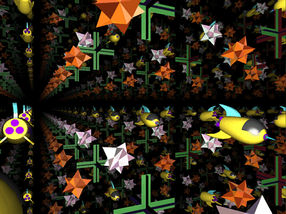

![[HOME]](sos_files/home.gif) The Geometry Center Home Page
The Geometry Center Home Page
|  |  |
What is the shape of the universe? It is possible that it is Euclidean three-space: infinite volume, with no straight path returning to meet itself. However, the universe might also be finite in volume. You might be able to travel on a straight path and return to your starting point. How is this possible? This is the question addressed in the Geometry Center's new movie The Shape of Space. This article describes the movie, the making of the movie, and describes some future materials development for it. Although the plans for distribution are not yet decided, I wanted to write this article now to announce the good news that the movie has just been accepted to the SIGGRAPH 95 Computer Animation Festival/ Electronic Theatre and also into this year's SIGGRAPH Video Review.
The Shape of Space is an eleven minute introduction to two- and three-manifolds intended for students grades 6-12. It describes the sphere, torus, and Mobius strip, and related three-dimensional objects. Although the ideas are quite sophisticated, the movie manages to develop them clearly enough that a junior high and high school audience can understand. It is designed to stand alone without any need for preparatory lectures or exercises before the video.
Here is a brief illustrated description of the plot. On the three figures below, click anywhere on the figure to get an mpeg of the appropriate scene.
How can a space ship go in a straight line and return to where it started? The movie describes this possibility in two-dimensional objects such as the sphere, the torus, and the Mobius strip. Figure 1 shows a space ship returning to its starting point in the two-dimensional torus. It shows both the standard torus and the square with sides identified.

Figure 1 (515K)
Moving on to three-dimensions, the movie describes a series of three-manifolds created by identifying sides of a box. This is the three-dimensional analogue of identifying sides of a square. For example, Figure 2 shows a view from inside a three-torus.

Figure 2 (1.5MB)
Figure 3 shows the view from inside the three-dimensional analogue of a Klein bottle.

Figure 3 (1.5MB)
In both figures 2 and 3, although there are only two stars and one space ship, the identification of sides makes the space appear to go on forever and be filled with stars and ships.
Jeff Weeks has been lecturing on the shape of space for the last ten years and has written a book on the subject. The Geometry Center movie is based on Weeks' book. In 1992, Celeste Fowler created a draft of the video at the Center. However, it was not until December that a proposal for a production quality video went through. Technical production started in mid-January. Stuart Levy, Tamara Munzner, and Lori Thomson worked on the video at the Center, with remote help from Charlie Gunn, Delle Maxwell, and Jeff Weeks. On April 25th, 1995 with rejoicing and popcorn, the movie had its debut at the Geometry Center.
An under four month production time makes this by far the shortest production time video from the Center. This is especially remarkable, since it also had the smallest production staff. They were able to speed production time so enormously by starting with a carefully followed script. In addition, in March, a draft went to three test sites of students and a test site of teachers. The feedback from these groups was very important in knowing what the students did not understand and how to fix it.
This summer, teachers and students in the Center summer programs will work as a team to create class materials to use in conjunction with The Shape of Space. In addition to these related class materials, Jeff Weeks intends to improve his related Macintosh geometry software and make it into arcade style video games. (For more information about the current versions of Weeks' software, see Evelyn Sander, Geometry Games.)
This article is based on an interview with Lori Thomson, a member of the production staff of The Shape of Space. Figures are stills from the movie. mpegs are also from the movie, adapted for the Web by Lori Thomson. Jeff Weeks' book is Jeff Weeks, "The Shape of Space," Marcel Dekker, Inc, New York, 1985.
It has come to my attention that Celeste Fowler's 1992 draft of the Shape of Space video was inspired by a previous draft by Carol Sohn, Karen Olsson, and Prem Janardhan. The three were student interns in at the Geometry Center 1992; they created some of the initial Shape of Space scenes for their summer project.
The Geometry Center Home Page
Comments to:
webmaster@www.geom.uiuc.edu
Created: June 5 1995 ---
Last modified: Mon Oct 27 13:01:46 1997